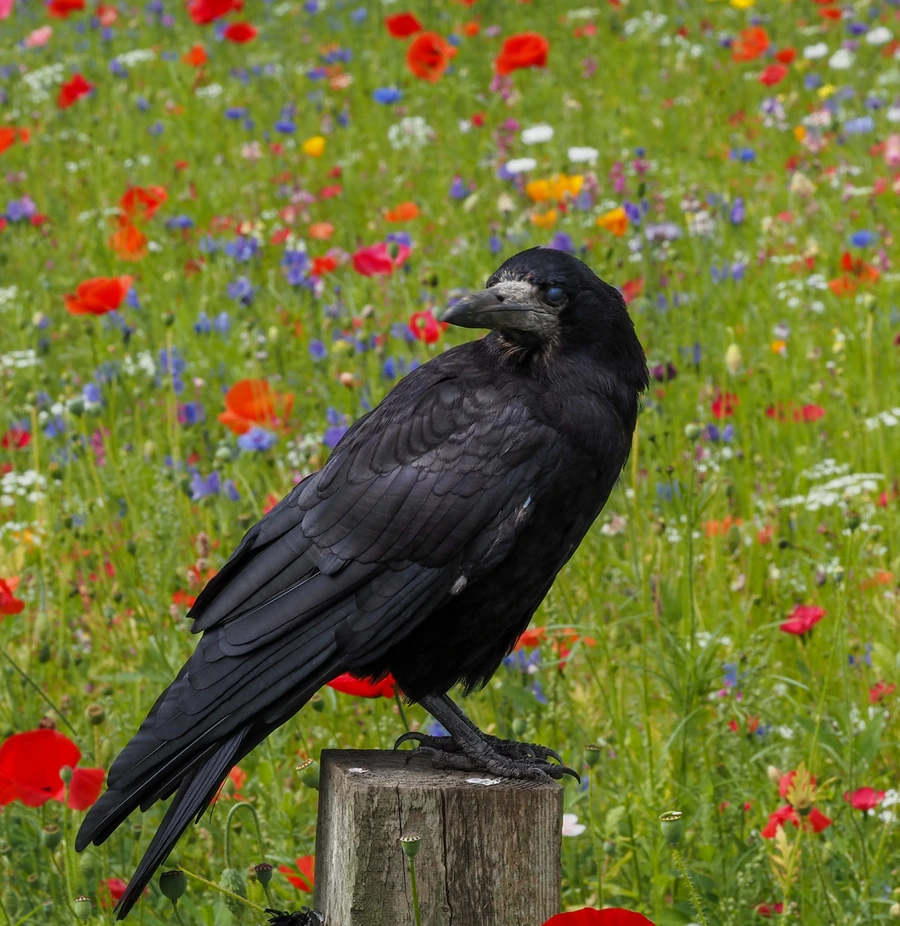

鸟类 · 动物界
秃鼻乌鸦 Corvus frugilegus

通体乌黑的鸦类，成鸟嘴基部裸露灰白皮肤，看似“秃鼻”。常结成大群在农田觅食，繁殖期形成喧闹的树上巢群。
- 分类
- 门脊索动物门纲鸟纲目雀形目科鸦科属鸦属
- 栖息环境
- 农田、草甸、牧场、城市公园、林地边缘与村庄附近，偏好开阔的觅食地和高大乔木。
- 地理分布
- 欧亚大陆广布，中国北方繁殖，南方多为冬候鸟；欧洲、中亚至东亚均有分布。
- 保护级别
- IUCN 红色名录列为无危（LC）；中国列入“三有”陆生野生动物名录。
物种志
秃鼻乌鸦体长约四十四至四十六厘米，体重二百八十至四百五十克。通体黑色，羽毛具蓝紫色金属光泽，雄鸟光泽更明显；喉部和前胸羽毛蓬松，呈“胡须”状。成鸟最显著的特征是嘴基部至眼周的裸皮呈灰白色，显得像秃了鼻子，幼鸟裸皮尚未形成，面部仍被羽毛覆盖。喙黑色，虹膜深褐，脚黑色。
它栖息于农田、草甸、城市公园与林地边缘，常结成数十只至数百只的大群活动，在地面行走觅食昆虫、蚯蚓、谷物、果实和腐肉，也跟随犁地机械捡食翻出的幼虫。繁殖期在树上集群筑巢，同一棵树上可有多个巢，巢群喧闹壮观，每窝产卵三至五枚。秃鼻乌鸦广泛分布于欧亚大陆，中国北方常见，南方多为冬候鸟。它取食大量农业害虫，列为“三有”动物。
形态与习性
- 体长44–46 厘米
- 体重280–450 克
- 食性昆虫、蚯蚓、谷物、果实与腐肉
- 繁殖树上集群营巢，每窝 3–5 枚
- 特征成鸟嘴基裸露灰白皮肤
- 保护级别IUCN 无危；“三有”动物
趣味知识
- 成鸟嘴基部的裸皮灰白，像戴了一副短面罩。
- 繁殖期几十个巢挤在同一片树上，十分喧闹。
- 常跟在犁地机后面捡食翻出的金龟子幼虫。